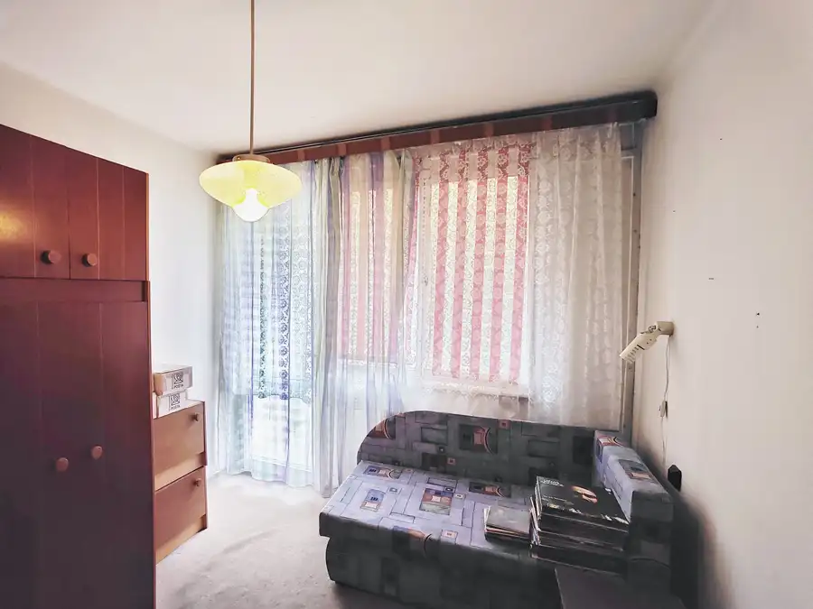
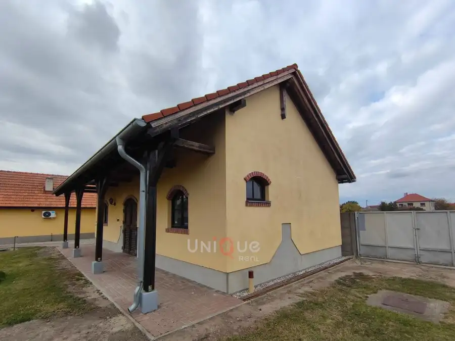
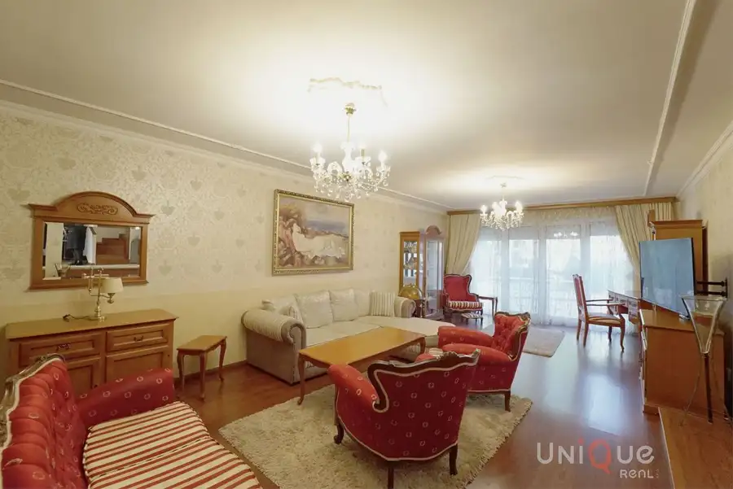
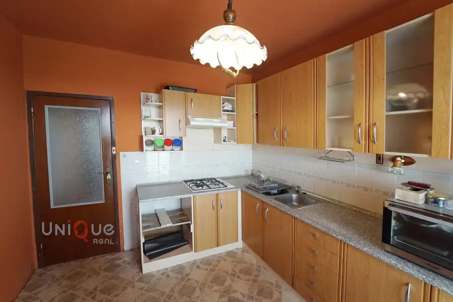

Predaj · Byt
Exkluzívne na predaj 2 izbový byt na Gazdovskej ul.
Komárno
83 000 €1 596 € za m²

- Dispozícia2-izbový
- Plocha52 m²
- Poschodie2. z 3
- StavPôvodný stav
O nehnuteľnosti
Exkluzívne Vám ponúkame na predaj 2 izbový byt v Komárne na Gazdovskej ulici.Byt sa nachádza v stredovej zóne zatepleného bytového domu.Dispozícia:obývacia izba, spálňa s loggiou, kuchyňa, kúpeľňa, oddelená toaleta, chodba. Byt je v pôvodnom stave. K bytu patrí pivničný priestor.Výhody: stredová zóna, loggia, tehlový dom.Byt sa predáva len v našej RK.Cena: 83.000,- €Kontakt k obhliadke:Ing. Daniel Orvoš, RSc.:0905422818daniel.orvos@wuestenrot.sk
Parametre
- Cena vrátane energií
- Nie
- Druh
- 2 izbový byt
- Dátum zverejnenia
- 01. 04. 2026
- Energetický certifikát budovy
- nie je
- Podlažie
- 2
- Počet nadzemných podlaží
- 3
- Rok výstavby
- 1966
- Stav nehnuteľnosti
- Pôvodný stav
- Typ
- Predaj
- Typ konštrukcie
- Tehlová
- Vybavenie
- Lodžia, Pivnica
- Úžitková plocha
- 52 m²
Kde to je


Ďalšie ponuky
Celá ponukaMohlo by Vás zaujímať

DomNové 95 000 €Na predaj rozostavaný rodinný dom v Zlatnej na Ostrove Zlatná na Ostrove 100 m²
DomNové 298 000 €Na predaj priestranný a kompletne zariadený rodinný dom s bazénom a dvojgarážou v tichej lokalite Komárna Komárno 316 m²
BytNové 84 000 €Na predaj veľký 3 izbový byt v Hurbanove na Sládkovičovej ul. Hurbanovo 3-izbový78 m²4. podlažie